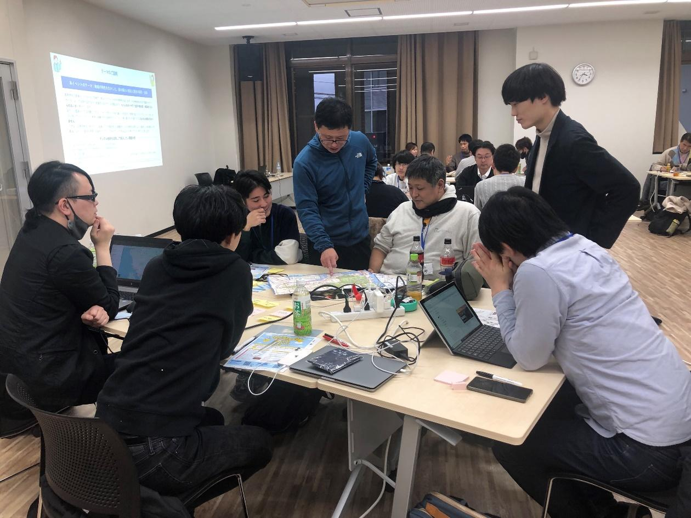

シビックテックと県内自治体との共創イベント
「福井県知事杯ハッカソン ２０２４」を開催します！
福井県では、これまで３年間にわたりハッカソンを開催してきました。 今年は、実践に近い体験ができるよう趣向を変えて、アイディアを実現する機会、新しい仲間と出会う機会、社会課題を解決する機会の３つの機会を提供するとともに、「ともに考え、ともにつくる」共創の本質を感じていただきます。 福井県知事杯への挑戦をお待ちしております！
知事杯ハッカソン２０２４の当日の様子はこちらから
1. 概要
シビックテック参加者と課題を提案した自治体が対等な立場で意見交換しながら、自治体が抱えている地域課題解決に向けたサービスやプロダクトの提案・開発を行うイベントを実施します。 ハッカソンで提案・開発されたサービスやプロダクトは、オープンソースソフトウェア（※）として福井県に提供していただくとともに、課題を提案した自治体や県内自治体等において社会実装を目指します。 ※オープンソースソフトウェア（ＯＳＳ）とは、ソフトウェアのソースコードが公開され、利用や改変、再配布を行うことが 誰に対しても許可されているソフトウェアのことを指します。  昨年度の様子
福井県三国湊における地域課題解決ハッカソン
福井県敦賀市アイデアソン
2. 日程
（１）Ｄａｙ１：
令和６年９月１日（日）
令和６年９月２８日（土） １３時から１７時（予定）
実施内容：自治体による課題プレゼンテーション、地域課題に対する解決手段のアイディア出し 等 テーマ：県内自治体から提示される地域課題
自治体
課題
敦賀市
テーマ：敦賀市の空き家の利活用 概要：空き家の売却や賃貸したい人を後押ししたい。 既存「空き家情報バンク」があるが登録者が少ない。 空き家を活用したい人が使ってくれるような仕組みづくりを行いたい。
鯖江市
テーマ：市民の声を政策に反映させるデジタル・プラットフォームの整備 概要：市民の参加・協働を今まで以上に促進し、市民が主体となり、 社会課題への解決策を自ら提案し実行する文化を更に育てたい。
（２）Ｄａｙ２：
令和６年９月２８日（土）
令和６年１１月２日（土）１３時から１６時３０分（予定）
実施内容：各チームの成果発表、優秀チームの表彰 等 （３）Ｄａｙ１からＤａｙ２までの１か月間はサービス・プロダクト開発の作業期間とします。 作業期間は有識者の技術的アドバイスを受けることができます。 （４）ハッカソンで提案・開発されたサービスやプロダクトは、課題を提案した自治体や県内自治体等において社会実装を検討します。 実装の希望があった場合は、是非参加者の皆様にも無理のない範囲で、実装に向けてご協力いただけますと幸いです。 なお、年末までは社会実装に向けた支援（技術的アドバイスや勉強会など）を受けることができます。 （５）ハッカソン初心者対象講座を開催します。 日程：
令和６年８月３１日（土）
令和６年９月２８日（土）９時から１２時（予定）
内容：シビックテック入門、Ｗｅｂアプリ制作体験 全員参加ではありません。希望者のみ対象となります。 希望者はハッカソン申込時に参加登録をお願いします。
3. 会場
Ｄａｙ１、Ｄａｙ２、初心者対象講座、すべて同一会場となります。
株式会社jig.jp開発センター(本店)
福井県鯖江市横越町１０-３４-１ ハピラインふくい 鯖江駅より徒歩 約１5分 車でお越しの方は敷地内駐車場をご利用ください。
4. 表彰
Ｄａｙ２において次の賞を選出します。 福井県知事杯（最優秀賞 : 副賞 賞金１０万円）１チーム コメンテーター賞（特別賞（技術視点賞、公共視点賞）: 副賞 賞金5万円） ２チーム コメンテーター紹介 (氏名五十音順)
コメンテーター（技術視点評価者） 下山 紗代子 様 一般社団法人リンクデータ 代表理事 インフォ・ラウンジ株式会社 取締役 デジタル庁 オープンデータ伝道師、他
コメンテーター（公共視点評価者） 平本 健二 様 （独）情報処理推進機構 参与 デジタル庁（非常勤）
5. 申し込み
参加希望者は
「応募要項」
を必ずご確認の上、 参加フォームに必要事項を記載して申し込み下さい。 申し込み締切日：
令和６年８月30日（金）
令和６年９月２０日（金）
福井県知事杯ハッカソン ２０２４ 参加フォーム
6. 主催 共催 後援
主催：福井県 共催：敦賀市 鯖江市 後援：Code for FUKUI
7. 問い合わせ先
問い合わせ先 本事業・応募に関するお問い合わせ 「福井県知事杯ハッカソン ２０２４」運営事務局 （受託者：株式会社B Inc. メール：
info@b-incorp.com
）